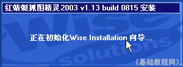
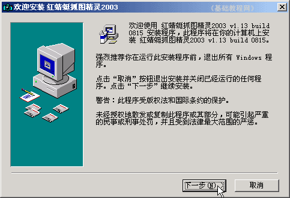
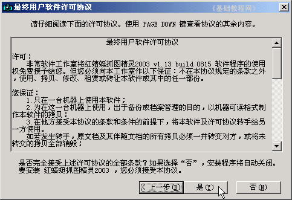
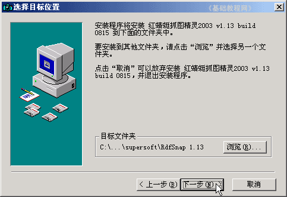
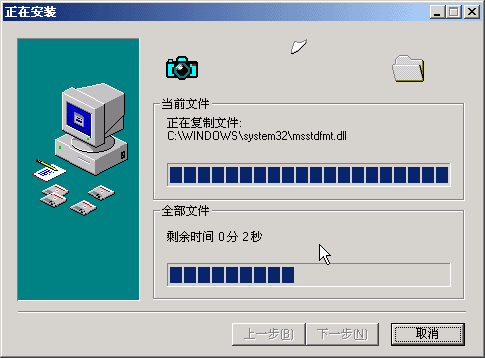
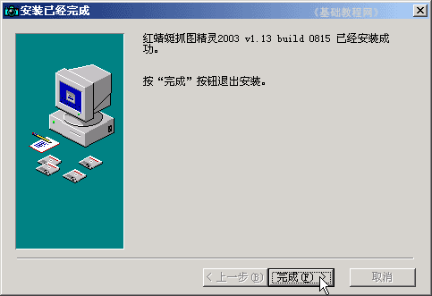

抓图基础入门教程
一、安装软件 返回
使用电脑中，经常会用到抓图功能，比如在讲解、帮助、保存图片的时候，都需要用抓图来说明，下面我们来看一个练习；
1、抓图软件
1）常见的抓图软件有许多，如HyperSnap-DX、SnagIt、红蜻蜓抓图精灵等等，前面两个是共享版的有使用限制；
2）我们以红蜻蜓抓图精灵为例来学习如何抓图和保存图片，它是免费的抓图软件；
2、安装红蜻蜓
1）软件有两个版本，2003版本地下载：红蜻蜓抓图2003 （友情提示：下载后请检查病毒）
2005版下载：华军下载 官方下载，2005使用中会出现系统响应变慢，因此推荐使用2003版；
2）下载后解压得到安装包程序，一个照相机图标；
3）双击运行安装包程序，首先是初始化安装向导；

4）然后出来一个欢迎界面，点“下一步”继续；

5）在接下来出来的许可协议中点“是”继续；

6）接下来的安装路径默认装在C:盘，这儿不用修改，点“下一步”继续；

7）后面一直点“下一步”、“下一步”，直到出现“完成”，点击完成安装；

8）安装完成以后，会自动添加许多快捷方式，保留桌面上的，开始菜单里的可以全部删除，快速启动栏里的可以先留着，
注意这儿只是删除了快捷方式，程序卸载可以到“控制面板－添加/删除程序”中进行；
本节学习了安装红蜻蜓抓图软件的基本方法，如果你成功地完成了练习，请继续学习下一课内容；
本教程由86团学校TeliuTe制作|著作权所有
基础教程网：http://teliute.org/
美丽的校园……
转载和引用本站内容，请保留版权信息和本站链接。